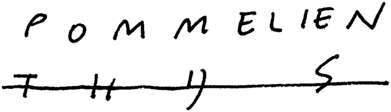
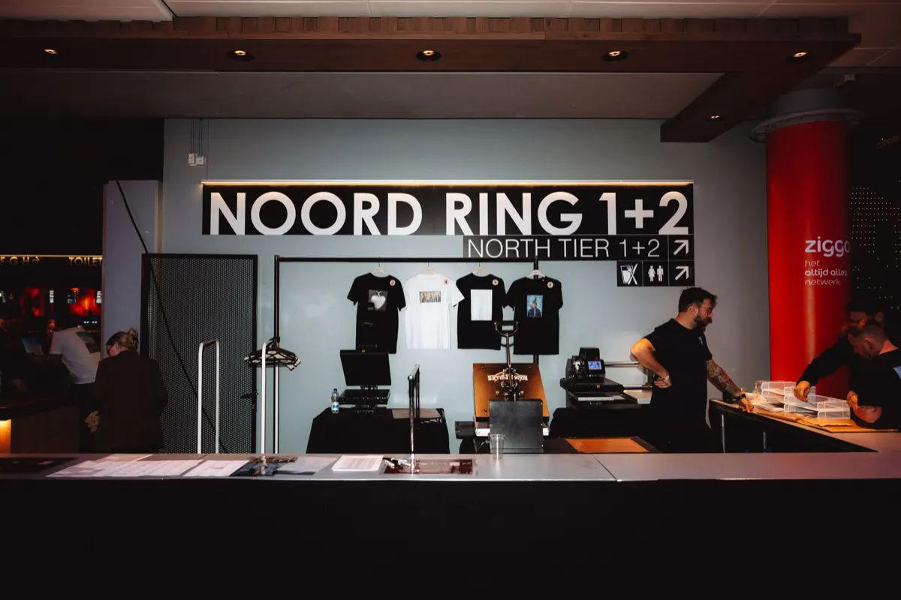

Zaterdag 7 november 2026 · Ziggo Dome
Upcycle pop-up
Alle timeslots uitverkocht. Bedankt voor jullie enthousiasme!

Voor het eerst in Nederland: de upcycle pop-up van Pommelien Thijs. Jullie brachten jullie eigen T-shirt, hoodie of blanco totebag mee naar Ziggo Dome, en wij gaven het een tweede leven met een unieke Pommelien-print.
Want: Fuck Fast Fashion.
Item niet afgehaald?
Geen zorgen, we bewaren het voor je. Stuur een mailtje naar info@pommelienthijs.be en we zoeken samen een oplossing.
Mail ons